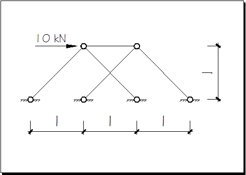

静定桁架之谜
在Mathematica的文档里翻和Linear Programming相关的东西，找到一个很好玩的例子Design of an Optimal Anchor。简单的说，就是用线性规划来优化设计一侧锚固在墙上，另一侧受向下集中荷载的悬臂桁架。初始桁架由网格点阵中曼哈顿距离小于等于3的节点彼此连接而成，程序根据静力平衡条件对所有可能的各杆件内力组合以 Minimize ∑|force·length| 作优化（注：不考虑压杆稳定），然后移除内力微小的杆件，剩下的骨架就是锚件的最优化形式。详细步骤参考Mathematica文档上的说明。
乍一看，这种优化方法从结构力学的角度考虑是讲不通的。因为例子中的初始桁架属于超静定结构，从静力平衡方程来说，未知数的个数多于约束方程组个数，因此存在多组可行解。通常在结构力学中，必须加上变形协调条件以确定究竟哪一组解才是合理的。举一个简单的例子，把两根相同（长度l，截面积A，弹性模量E都相同）的水平杆通过铰节点连接，整体两端与墙铰接，在中间铰节点处施加一个向右的1kN水平力，那么Fl=100kN，Fr=99kN（均为受拉）也满足静力平衡方程 -Fl+Fr+1=0，但在真实世界中是不会出现这种情况的。只需加入变形协调条件的约束就可以知道，两根杆有大小相同、反向相反的形变Δ（即中间铰接点的位移），因此Fl和Fr必须符号相反，大小都等于 EA/l·Δ。
从另一个角度说，对于给定的超静定桁架，按文档里的方法依据 Minimize ∑|force·length| 求出杆件内力的“最优解”以后，把各根杆件的截面积取为正比于杆件内力的值，此时任何一根杆的线刚度 i = EA/l 已经确定，所以整体桁架的内力可以通过矩阵位移法求出，但是如此求得的内力却不大可能会和刚才假想的“最优解”一致。那么二者什么时候会一致呢？显然唯一能使等式成立的条件是：这个超静定桁架恰好被优化成了静定的。
下面就来分析Optimal Anchor中的超静定桁架如何被优化成静定桁架。
首先，程序中为什么要用 comps 和 tensions 两个非负List分别表示杆件的压力和拉力，而不是按照结构力学的惯例用正负号区分轴力的方向呢？这是因为这里非常规的使用了线性规划来求解，顾名思义，目标函数也必须是线性的。使用两个非负List可以避免引入绝对值运算，可直接调用现成的函数接口。
Mathematica中LinearProgramming用法的一个简单示例：
(* vars: 方程的未知数List *)
vars = Union[Flatten[{comps, tensions}]];
(* const3: 约束方程组(节点的静力平衡条件)，用CoefficientArrays获取方程的常数项向量和未知数系数矩阵 *)
{rhs, ma} = CoefficientArrays[const3, vars];
(* 目标函数向量 *)
obj = CoefficientArrays[volume, vars][[2]];
{m, n} = Dimensions[ma];
sol = LinearProgramming[obj, ma, Transpose[{-rhs,Table[0, {m}]}], Table[{0, Infinity}, {n}]];注意，LinearProgramming函数根据问题规模自动在较快的InteriorPoint和速度慢但是更精确的(Revised)Simplex方法中选择，所以会出现当矩阵的维数达到一定阈值后计算时间反而减少的现象。
那么，最小化∑|force·length|一定会把桁架优化为静定的吗(这样可行解就一定在力学上合理)？答案是肯定的。一种直观的理解是，超静定桁架不如它的最优静定子结构（也就是 ∑|force·length| 最小）的传力路径简捷。可以把一个超静定桁架看作它的最优静定子结构与其它静定子结构的合成，根据叠加原理，最优静定子结构将会优于超静定结构。
我们知道，给定一种材料，其弹性模量E和容许应力[σ]为恒定值，在这种情况下 ∑A·L 最小时结构的材料也最省，对于静定结构，可令Ai=|Fi|/[σ]，所以最小化 ∑|force·length| 就可以得到最优化的结构；对于超静定结构来说，杆件内力和各杆件间的刚度比密切相关，因此对于一组给定的杆件内力，必须满足最小截面Ai,min≥|Fi|/[σ]，而其他截面Aj>|Fi|/[σ]，所以 ∑A·L 将比根据 ∑|force·length| 计算出的结果大。
来看一个例子：

来试算一下上图所示的超静定桁架：
In[1]:= ma = { {-(1/Sqrt[2]), 1/Sqrt[2], 0, 0, 1},
{-(1/Sqrt[2]), -(1/Sqrt[2]), 0, 0, 0},
{0, 0, -(1/Sqrt[2]), 1/Sqrt[2], -1},
{0, 0, -(1/Sqrt[2]), -(1/Sqrt[2]), 0} };
In[2]:= rhs = {-10, 0, 0, 0};
In[3]:= vars = x[#] & /@ Range[Dimensions[ma][[2]]];
In[4]:= obj = {Sqrt[2], Sqrt[2], Sqrt[2], Sqrt[2], 1};
In[5]:= sol = Solve[ma . vars == rhs, vars][[1]]
During evaluation of In[5]:= Solve::svars: Equations may not give solutions for all "solve" variables. >>
Out[5]= {x[5] -> Sqrt[2] x[4], x[1] -> 5 Sqrt[2] + x[4],
x[2] -> -5 Sqrt[2] - x[4], x[3] -> -x[4]}
In[6]:= solution = vars /. sol
Out[6]= {5 Sqrt[2] + x[4], -5 Sqrt[2] - x[4], -x[4], x[4],
Sqrt[2] x[4]}
In[7]:= ToBeMinimized = Plus @@ ( Apply[Abs[#1*#2] &, #] & /@ Transpose[{ solution, obj}] )
Out[7]= Sqrt[2] Abs[-5 Sqrt[2] - x[4]] + 3 Sqrt[2] Abs[x[4]] + Sqrt[2] Abs[5 Sqrt[2] + x[4]]
In[8]:= Minimize[ToBeMinimized, vars]
Out[8]= {20, {x[1] -> 0, x[2] -> 0, x[3] -> 0, x[4] -> 0, x[5] -> 0}}x[4]的值取为0，所以这个桁架被优化成了静定结构。
对于Mathematica中的例子，请看下面这张原程序在10×10网格上优化结果的实例图，毫无疑问这就是一个典型的静定桁架。

上面啰哩八嗦写了这么多，感觉还是没有表达清楚推导过程。我猜测这个问题从矩阵的角度来看会有很简洁的表述，就像用刚度矩阵的秩来判断结构的常变、瞬变、静定、超静定一样。关于这一点，还有待今后进一步研究。